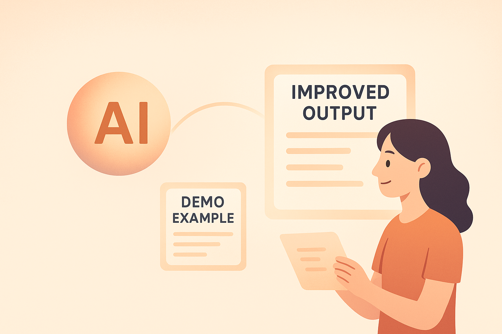
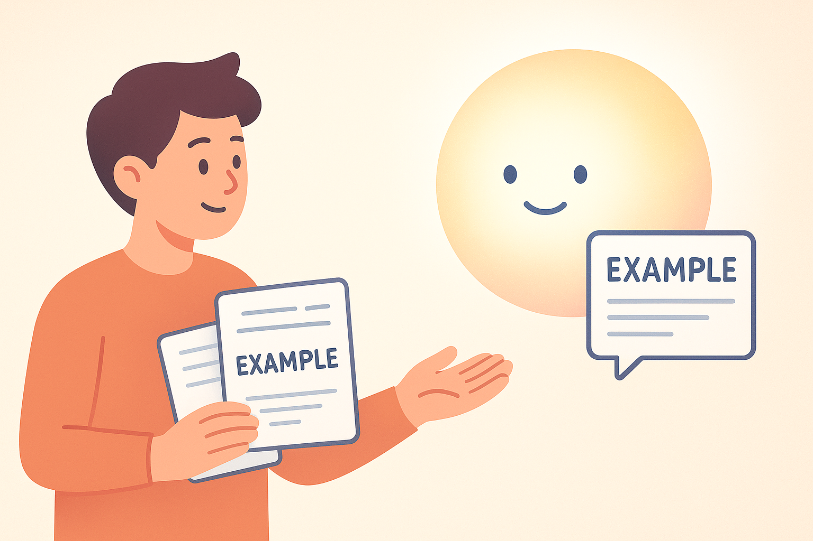
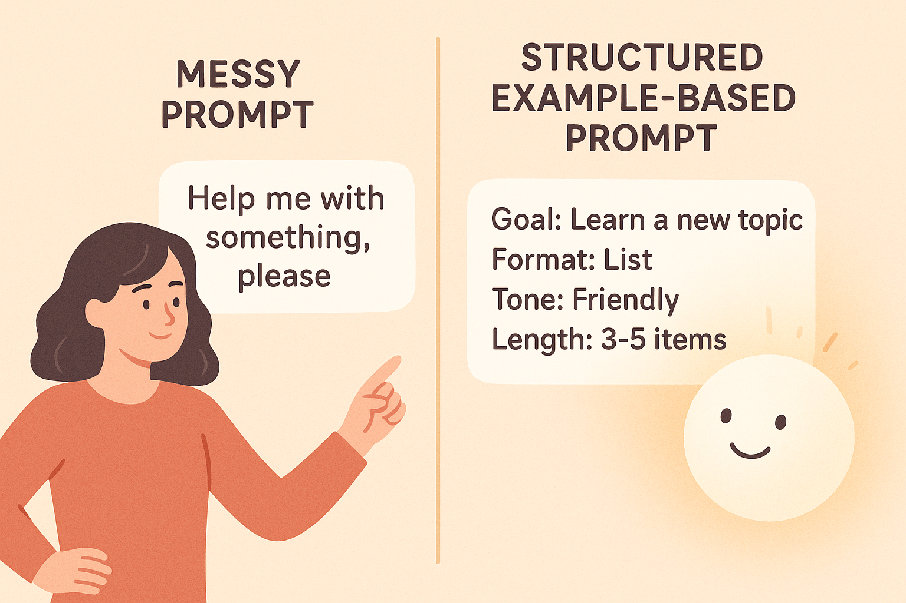

6 Beispiele wirken Wunder: In-Context Learning erklärt
6.1 Warum Beispiele mehr sagen als Anweisungen
Erinnerst du dich an die letzten Male, in denen du etwas Neues lernen wolltest? Vielleicht ein Matheproblem, eine Programmieraufgabe oder ein gutes Social-Media-Intro. Wahrscheinlich hast du intuitiv das gemacht, was alle guten Lernenden tun: Du hast dir Beispiele angeschaut.
Beispiele sind wie kleine Abkürzungen im Denken. Sie zeigen nicht nur was man tun soll, sondern wie. Genau so funktioniert auch KI. ChatGPT, Gemini, Claude, Llama – alle großen Modelle verstehen Muster über Beispiele. Und wenn du ihnen zeigst, wie etwas aussehen soll, dann erzeugen sie Ergebnisse, die deinem Beispiel erstaunlich ähnlich sind, nur angepasst an dein Ziel.
Diese Fähigkeit heißt:
👉 In-Context Learning (ICL)Der Name klingt kompliziert, aber der Kern ist simpel:
Du gibst ein Beispiel, und die KI lernt kurzzeitig „innerhalb dieses Gesprächs“, wie sie antworten soll.
Es ist, als würdest du der KI ein Minigesetzbuch schreiben, das nur für diese Aufgabe gilt.
6.2 Die Metapher: „Der KI zeigen, wie es richtig geht“
Stell dir vor, du willst jemandem beibringen, wie man ein gutes TikTok-Intro schreibt. Du könntest folgendes sagen:
„Schreib einfach ein gutes Intro.“
Oder du könntest folgendes tun:
→ Ein Beispiel zeigen.
„Hier ist ein starkes Intro:
‚Stop scrolling — you’re about to learn the shortcut that saved me hours last week…’.
Schreibe jetzt ein Intro im gleichen Stil für das Thema XY.“
Im zweiten Fall hat die KI einen Rahmen, den sie versteht. Ein Beispiel ist wie ein Startpunkt, an dem das Modell Muster erkennt:
- Tonfall
- Satzrhythmus
- Struktur
- Ziel
- Stil
Beispiele sind wie eine Taschenlampe: Sie zeigen der KI die Richtung.

6.3 Warum KI sich so stark an Beispielen orientiert
Sprachmodelle sind Muster-Modelle. Sie wurden darauf trainiert, den wahrscheinlichsten nächsten Text zu erzeugen, basierend auf all den Beispielen, die sie je gesehen haben. Deshalb lieben sie es, wenn du ihnen neue Beispiele direkt im Prompt gibst — selbst einfache Micro-Beispiele können das ganze Ergebnis verändern.
👉 Ein Beispiel ohne Beispiel 😉
Prompt:
„Erkläre Photosynthese für Kinder.“
Das Ergebnis kann gut sein… oder zu wissenschaftlich… oder zu simpel.
👉 Ein Beispiel mit Beispiel
Prompt:
„Schreibe Erklärungen im folgenden Stil:
Beispiel: ‚Stell dir vor, eine Pflanze ist wie eine kleine Küche, die Licht in Energie kocht.‘
Erkläre jetzt Photosynthese im gleichen Stil.“
Jetzt hat die KI einen klaren „Stil-Seed“. Und die Antwort wird konkret, sprechender, kindgerechter.
6.4 Die drei Modi: 1-Shot, 2-Shot, Multi-Shot
👉 1-Shot – Ein Beispiel genügt
Du gibst ein einziges Beispiel, das zeigt, wie die Antwort aussehen soll.
🌟 Perfekt für:
- Schreibstil nachahmen
- Struktur vorgeben
- Tonfall definieren
Beispiel:
„Schreibe wie im folgenden Beispiel eine Lernkarte zum Thema ‚Diffusion‘:
Beispiel:
Frage: Warum ist der Himmel blau?
Antwort: Weil Luftteilchen das Sonnenlicht streuen – und Blau am stärksten.
Jetzt zum Thema Diffusion.“
👉 2-Shot – Zwei Beispiele schaffen Klarheit
Zwei Beispiele zeigen ein Muster. Die KI erkennt: „Ah, so sehen die Antworten konsequent aus!“
🌟 Perfekt für:
- Aufgaben mit festen Regeln
- Formatvorgaben
- wiederholbare Strukturen
Beispiel:
„Hier sind zwei Beispiele für kurze Fachtext-Zusammenfassungen:
Beispiel 1: …
Beispiel 2: …
Schreibe jetzt eine Zusammenfassung im gleichen Muster über XYZ.“
👉 Multi-Shot – Du bringst der KI einen Stil wirklich bei
Mehrere Beispiele (3–10) erzeugen einen Mini-Datensatz. Je mehr Beispiele, desto klarer erkennt das Modell das Muster.
🌟 Perfekt für:
- Social-Media-Stile
- Schreibstile
- längere strukturierte Aufgaben
- komplexe Formate (z. B. Lernkarten, Checks, Analysen)
6.5 Warum Beispiele oft besser funktionieren als Anweisungen
Wenn du nur sagst:
- „Schreibe im TikTok-Stil.“
- „Mach die Erklärung jugendlich.“
- „Schreibe wie ein Experte.“
Dann stellt sich die KI intern die Frage:
„Welche von den Millionen möglichen Interpretationen wünscht die Person?“
Aber wenn du ein Beispiel gibst, gibst du ihr:
- Tonfall
- Länge
- Formulierungsmuster
- Rhythmus
- Level
Beispiele sind wie ein Shortcut zwischen deinem Kopf und der KI.
6.6 Beispiel: Schule – Hausaufgaben
👉 Ohne Beispiel
„Erkläre den Unterschied zwischen Mitose und Meiose.“
→ KI erklärt, aber vielleicht zu ausführlich.
👉 Mit Beispiel
„Schreibe Erklärungen in folgendem Stil:
Beispiel:
‚Osmose ist wie wenn Wasser durch eine Tür in einen Raum wandert, um dort die Konzentration auszugleichen.‘
Jetzt: Erkläre den Unterschied zwischen Mitose und Meiose.“
→ Die KI erklärt verständlicher und bildhafter.
6.8 Beispiel: Lernen – Zusammenfassungsstile
👉 Beispielvorgabe
„Schreibe Zusammenfassungen wie:
Beispiel: ‚Kurz, klar, knapp: Der Begriff Osmose bedeutet…’
Jetzt Thema: Französische Revolution.“
→ Die KI folgt dem exakten Stil.
6.9 Beispiel: Coding – Muster für Fehlermeldungserklärungen
👉 Beispiel
„Erkläre Fehlermeldungen im folgenden Muster:
Beispiel:
‚Fehler: NameError
Grund: Du hast eine Variable verwendet, die es nicht gibt.
Fix: Definiere die Variable vorher.‘
Jetzt erkläre den Fehler „TypeError: unsupported operand type(s)“.“
→ Du bekommst strukturierte, einheitliche Antworten.
6.10 Mini-Übung: „Zeige der KI, wie es geht“
Verbessere diese drei Prompts, indem du ein Beispiel hinzufügst:
- „Schreibe ein Motivationszitat.“
- „Erkläre kurz, wie Wechselstrom funktioniert.“
- „Gib mir ein Intro für ein YouTube-Video über Programmieren.“
Überlege: Welches Beispiel würde der KI helfen, deinen Stil zu erkennen?
👉 Zwischenfazit
Mit Beispielen steuerst du die KI wie ein Navigator.
Ohne Beispiele: Die KI rät.
Mit Beispielen: Die KI folgt deinem Weg.
In den folgenden Abschnitten des Kapitels gehen wir tiefer:
- Wie du perfekte Beispiele auswählst
- Wie du KI auf ein bestimmtes Format „trainierst“
- Wie du Multi-Shot-Prompts baust
- praktische Übungen
6.11 Wie du Beispiele in der Praxis einsetzt – ganz ohne komplizierte Theorie
Bisher hast du gelernt, dass KI nicht wie ein Mensch versteht, sondern Muster erkennt – und dass Beispiele für sie wie „Mini-Landkarten“ funktionieren. Jetzt gehen wir einen Schritt weiter: Wir schauen uns an, wie du diese Beispiele in echten Situationen nutzt, egal ob in der Schule, für Social Media, fürs Lernen oder fürs Programmieren.
Der große Trick dabei ist: Du musst nicht viele Beispiele geben. Oft reicht eines. Manchmal brauchst du zwei oder drei, damit die KI wirklich genau weiß, wohin sie will. Aber du brauchst nie zehn oder zwanzig – das wäre Zeitverschwendung.
Wenn du dieses Kapitel einmal verstanden hast, wirst du in der Lage sein, KI so zu steuern, wie ein Regisseur seine Schauspieler führt: nicht mit komplizierten Regeln, sondern mit Vormachen statt Erklären. Und das macht alles so unglaublich einfach.
6.12 Der „rote Faden“ für gute Beispiele
Damit deine Beispiele wirken, sollten sie drei Eigenschaften haben. Denk daran wie an eine kleine Checkliste:
1. Verständlich:
Kurze Sätze, klare Struktur, kein unnötiger Kram.
2. Wiederholbar:
Die KI muss erkennen können, wie dein Beispiel aufgebaut ist, damit sie es kopieren kann.
3. Übertragbar:
Das Beispiel sollte nah genug an der Aufgabe sein, aber nicht komplett identisch.
Beispiele sind wie Lego-Steine: Die KI baut daraus etwas Neues, aber mit dem gleichen Prinzip.
6.13 1-Shot-Beispiele: Ein Beispiel, ein Treffer
Ein 1-Shot-Beispiel bedeutet: Du zeigst der KI ein einziges gutes Beispiel, bevor du deine eigentliche Aufgabe stellst.
Das ist perfekt für Aufgaben wie:
- Texte vereinfachen
- Etwas erklären
- Einen Tonfall vormachen
- Etwas schreiben lassen „wie“ eine bestimmte Person
- Kleine Probleme lösen
👉 Beispiel: Erklärungen für Jüngere
Dein Beispiel:
„Beispiel:
Erklärung für 10-Jährige: ‚Ein Akku speichert Energie, ähnlich wie ein Wasserballon Wasser speichert. Wenn du dein Smartphone benutzt, lässt du ein bisschen von dieser gespeicherten Energie heraus.‘“
Deine Anfrage:
„Jetzt erkläre mir bitte Quantenphysik für 10-Jährige im gleichen Stil.“
Die KI hat damit alles, was sie braucht: Tonfall, Zielgruppe, Länge, Bildsprache.
6.14 2-Shot-Beispiele: Wenn du ein Muster noch klarer zeigen willst
Beim 2-Shot gibst du zwei Beispiele, um der KI klarere Grenzen zu setzen. Das ist nützlich, wenn:
- ein bestimmter Stil sehr wichtig ist
- die Aufgabe etwas komplexer ist
- du maximale Kontrolle über Struktur und Format willst
👉 Beispiel: Instagram-Bildunterschriften
Beispiel 1:
„Cute Post: Kurzer Satz, Emojis, freundlicher Tonfall:
‚Chilling mit meinem neuen Hoodie ☁️✨’“
Beispiel 2:
„Sportlicher Post: Klar, motivierend, 1 Satz + 1 motivierender Zusatz:
‚Heute Beine brennen lassen 💪🔥 – Schritt für Schritt!’“
Deine Anfrage:
„Schreibe nun eine Bildunterschrift für einen Skateboard-Post im gleichen zweistufigen Stil.“
Hier erkennt die KI das Muster:
→ Kategorie benennen
→ kurzer Satz
→ passende Emojis
→ Motivations-Anhang nur bei sportlichen Themen
Mit zwei Beispielen ist das extrem stabil.
6.15 Multi-Shot: Wenn du absolute Präzision willst
Multi-Shot (3 oder mehr Beispiele) brauchst du fast nie.
Typische Fälle:
- Du baust eine große Podcast-Serie
- Du willst, dass KI exakt wie deine Marke klingt
- Du erstellst ein komplexes Lernformat
- Du willst sehr präzisen Programmierstil vorgeben
Mehr Beispiele = mehr Kontrolle, aber auch mehr Aufwand.
👉 Beispiel: Lernkartenformat
Du gibst drei Beispiele für dein ideal aufgebautes Lernkartenformat.
Danach sagst du:
„Bitte erstelle jetzt 20 Lernkarten im gleichen Format für das Thema ‚Photosynthese‘.“
Die KI folgt dann dem Muster deiner Beispiele – Struktur, Länge, Formatierung, Stil.

6.16 Beispiele für das Lernen: Schule, Prüfungen & Nachhilfe
Hier sind konkrete Vorlagen, die du direkt kopieren kannst.
👉 1-Shot Beispiel: Geschichtszusammenfassung
„Beispiel-Zusammenfassung (kurz, 80 Wörter, klare Sprache):
‚Der Versailler Vertrag wurde 1919 nach dem Ersten Weltkrieg geschlossen. Er gab Deutschland die Schuld am Krieg, verlangte hohe Reparationszahlungen und schränkte das Militär stark ein. Viele Menschen in Deutschland empfanden den Vertrag als ungerecht. Das führte zu wirtschaftlichen Problemen und politischer Unzufriedenheit, die später den Aufstieg extremistischer Parteien begünstigte.‘
Bitte fasse nun die Französische Revolution im gleichen Stil zusammen.“
Die KI erkennt:
→ 80 Wörter
→ klare Sprache
→ neutrales Niveau
→ keine komplizierten Begriffe
👉 2-Shot Beispiel: Mathematik erklären (ohne rechnen)!
Beispiel 1:
„Erkläre so, dass ich es mir bildlich vorstellen kann.
‚Brüche sind wie Pizzastücke: Je mehr Stücke, desto kleiner jedes einzelne.‘“
Beispiel 2:
„Erkläre mit einem realen Beispiel.
‚Wahrscheinlichkeit ist wie Würfeln – du schaust, wie oft ein bestimmtes Ergebnis passieren kann.‘“
Deine Aufgabe:
„Erkläre mir bitte den Dreisatz im gleichen anschaulichen Stil.“
👉 Mini-Übung: Verbessere die Beispiele
Hier drei schlechte Versuche – verbessere sie mit dem In-Context-Prinzip:
- „Erkläre bitte Geschichte einfach.“
- „Mach meine Mathehausaufgaben leichter.“
- „Fasse den Text kurz.“
Du kannst daraus gute Beispiel-Prompts machen:
- „Beispiel: kurze Erklärung für 12-Jährige … Jetzt erkläre bitte X im gleichen Stil.“
- „Beispiel: erst Problem, dann Lösung … Jetzt löse bitte folgende Aufgabe:“
- „Beispiel: 3 Sätze + 1 Fazit … Jetzt fasse bitte diesen Text so zusammen:“
Das ist der Kern des In-Context-Learnings: Du formst die Antwort, indem du die Form vormachst.
6.18 Beispiele fürs Lernen: Programmieren (Coding)
Wenn du programmierst, sind Beispiele wie eine Vorlage oder ein Template. Du zeigst der KI, wie du etwas haben willst, und sie baut dir genau das nach.
6.18.1 Beispiel: Python-Lernformat
„Beispiel-Erklärung:
Titel: Was macht eine Variable?
Kurz: Eine Variable ist wie eine beschriftete Box, in der du einen Wert speicherst.
Code: x = 10
Warum wichtig: Du brauchst Variablen, um Werte zu speichern, die du später benutzen willst.“
Deine Anfrage:
„Bitte erkläre mir jetzt Schleifen im gleichen Format.“
👉 Beispiel: Fehler erklären
„Beispiel:
Fehler: NameError
Warum passiert das?
Die Variable wurde benutzt, bevor sie erstellt wurde.
Wie behebe ich das?
Definiere sie vorher.“
Deine Anfrage:
„Erkläre bitte einen SyntaxError im gleichen Format.“
Hier lernt KI durch Muster:
→ Fehlertitel
→ Warum
→ Lösung
Du musst nie wieder kryptische Fehlermeldungen googeln.
6.19 Tipps, mit denen deine Beispiele sofort besser werden
Hier einige Faustregeln, die du ab sofort immer anwenden kannst:
⭐ Regel 1: Verwende kurze Abschnitte
Die KI erkennt Muster besser, wenn sie klar getrennt sind.
⭐ Regel 2: Markiere dein Beispiel deutlich
Nutze:
- „Beispiel:“
- „Sample:“
- „Vorlage:“
- „Struktur:“
Nur ein Wort – und alles wird doppelt so gut.
⭐ Regel 3: Stelle danach immer eine klare Aufgabe
Nach dem Beispiel sagst du:
„Nun mache das Gleiche für …“
Das ist der Schlüssel.
⭐ Regel 4: Beispiele müssen nicht perfekt sein
KI versteht auch unvollkommene Beispiele – es reicht, wenn das Muster klar ist.

6.20 Kleine Abschlussübung: Du wirst selbst zum Prompt-Coach
Hier kannst du sofort üben.
👉 Aufgabe 1: Schule
Schlechter Prompt:
„Erkläre mir den Klimawandel einfach.“
Verbessere ihn:
„Beispiel:
Erklärung für 12-Jährige, 4 Sätze, ein Vergleich aus dem Alltag.
‚Ein Treibhaus speichert Wärme, damit Pflanzen wachsen können. Die Erde funktioniert ähnlich, aber gerade wird sie zu warm, weil zu viel CO₂ in der Luft ist. Dadurch bleibt mehr Wärme gefangen. Deshalb verändert sich unser Klima.‘
Erkläre jetzt bitte den Treibhauseffekt im gleichen Stil.“
👉 Aufgabe 2: Social Media
Schlechter Prompt:
„Schreibe eine coole Caption.“
Verbessere ihn:
„Beispiel:
‚Feeling good, doing my thing ✨🔥‘
Bitte erstelle eine ähnlich kurze, positive Caption für ein Foto auf dem ich in der Bibliothek lerne.“
👉 Aufgabe 3: Coding
Schlechter Prompt:
„Erkläre mir Listen in Python.“
Verbessere ihn:
„Beispiel-Format:
Titel
Kurz erklärt
Code-Beispiel
Warum wichtig
Erkläre jetzt bitte das Konzept einer Python-Liste im gleichen Format.“
6.21 Kurze Zusammenfassung: Was du aus diesem Kapitel mitnehmen solltest
👉 Beispiele sind wie kleine Spickzettel für KI.
👉 KI kopiert Muster – je klarer das Muster, desto besser das Ergebnis.
👉 Mit 1-, 2- oder Multi-Shot kannst du steuern, wie genau die KI dir folgen soll.
👉 Egal ob Schule, Social Media oder Coding: Mit Beispielen wirst du besser verstanden.
👉 Ohne Theorie, ohne Mathe – nur durch gutes Vormachen. 6.22 Ausblick auf Kapitel 7
Im nächsten Kapitel geht es um Chain-of-Thought – also darum, wie du KI dazu bringst, Schritt für Schritt zu denken, statt einfach nur schnelle Antworten auszugeben.
Du wirst lernen:
👉 warum „Lautes Denken“ der KI bessere Ergebnisse bringt
👉 wie du komplexe Probleme in einzelne Schritte zerlegst
👉 wie du KI dazu bringst, logisch statt impulsiv zu antworten
👉 wie Chain-of-Thought dir beim Lernen, Rechnen, Schreiben und Planen hilft
Kapitel 7 zeigt dir, wie KI genau so denkt, wie du es brauchst – Schritt für Schritt.